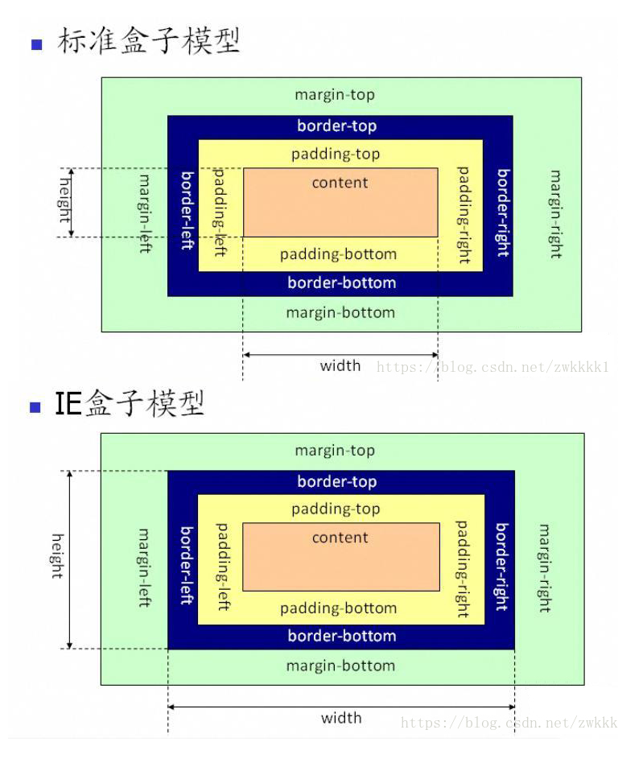

1.盒子模型：
标准模型 + IE盒子模型

2.差异:
标准模型: 盒模型宽高 = 内容宽高
IE盒子模型: 盒模型宽高 = 内容 + 内边距 + 边框
3.设置:
标准模型: box-sizing: content-box;
IE盒子模型: box-sizing: border-box;
4.边距重叠: 子元素设置margin-top，父元素会自动产生margin-top
解决方法:
parent:
padding: 1px;
display: inline-block;
float: left;
position: absolute;
child:
position: absolute;
display: inline-block;
float: left;
5.BFC:
原理:
内部的box会在垂直方向，一个接一个的放置
每个元素的margin box的左边，与包含块border box的左边相接触（对于从做往右的格式化，否则相反）
box垂直方向的距离由margin决定，属于同一个bfc的两个相邻box的margin会发生重叠
bfc的区域不会与浮动区域的box重叠
bfc是一个页面上的独立的容器，外面的元素不会影响bfc里的元素，反过来，里面的也不会影响外面的
计算bfc高度的时候，浮动元素也会参与计算
创建:
float属性不为none（脱离文档流）
position为absolute或fixed
display为inline-block,table-cell,table-caption,flex,inine-flex
overflow不为visible
根元素
下